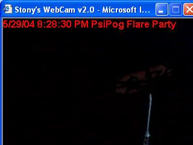

).
).
Ok, the idea is that we get a ton of people in the chat room, we set up a public webcam that everyone can watch, and we all try to flare a construct in front of the webcam while everyone is watching.
(Flaring a construct basically means making a visible psi ball ).
We wanted to catch it live, on the video feed, where everyone could see it. I think we had just under 100 people participating in it, and below is the information I wrote up right after it all happened.
So, the first question: did we succeed? Heh, that is actually very hard to answer. So some of you skeptics read that and say "oh, that means they failed", and perhaps some are saying to themselves "well, that means they probably did it".
What it means is: I don't know. So, read the document, and download the raw data I provide at
the end of the document, and make up your own mind. It is not a clear cut answer, no matter
what side someone supports. I've seen skeptics in the chat announce that it was terriable and
nothing went right (I disagree), and I've seen kids look at one picture and announce that we did
it and go nuts (I disagree with that too ).
It started a little past 7:00pm EST on Saturday, May 29th 2004. There were three attempts to get a flared psi ball on a camera so everyone could see it, with breaks in between. The camera took a picture every 3 seconds, and uploaded to a server (stony1205 was the person with the camera, and was the target location). All the users downloaded the images off of the server in 8 second intervals. For some reason (probably from the overload of people, or just some off timing), every once in a while a person would get a "broken image". We talked about it in the chat as getting an [x] because that's the icon that's displayed, or seeing "all white".
We attempted three times, with two breaks in between. I've broken the summary into four sections based on the three attempts and the first break (nothing noteable the second break).
Target flared color: Bright Green
Number of people in practice room: 98
Strategy: Everyone cram psi in front of the camera, and a few select people try to keep it
together.
Images:
Figure 10 |
Number of people in practice room: I forget, around 90-95
Images:
Figure 3 |
Figure 7 |
Figure 8 |
Figure 4 |
Figure 7 and Figure 8 were sent to me from PaleHorse. The second image is pretty self-explanatory, what do you think?
After the cardboard went back up, there was some blue color on the upper right (see Figure 4, bottom picture). That got us excited again, but stony claimed it was from his monitor, and fixed it so the light from the monitor wouldn't get in.
Target flared color: Red
Number of people in practice room: 88
Strategy: This time, we decided to designate a small group of people to focus specifically
on flaring, another group to focus specifically on shelling and keeping it together, and the others
were to do what they did before: send a bunch of psi to the target.
Images: None!
Comments:
Nothing really happened. At one point, the camera was reset and generated an all green picture but
other than that, nothing. My personal opinion, at this point it was getting VERY hectic. Tons of
distractions, we had people chatting in both rooms, and it was somewhat disorganized.
Target flared color: Yellow
Number of people in practice room: 50-60
Strategy: Back to the original strategy of everyone sending a bunch of psi. We also got
stony to put an object in the scene so we could focus on a location (he used the tip of a model
airplane).
Images:
Figure 11 |
|  Figure 12 |
[21:56] Astrodude15: when I was copy and pasting it into adobe I added a slightly brighter layer onto it, so everything stood out a tad more so it was easier to see
[21:56] Astrodude15: and then it was too bright, so I used the history brush
[21:57] Astrodude15: I must of missed deleting that extra layer when I did a new brighteninglayer
[21:57] peebrain: you edited psiball03.gif (Figure 12)?
[21:57] Astrodude15: -looks around for the unbrightened photo
[21:57] Astrodude15: just increased the contrast by 8 percent
[21:57] Astrodude15: err 6*
[21:58] Oneta: Yeah I wanna see the undedited O3
[21:58] Astrodude15: cause when it just was I couldn't see anything, and i could barely see it with 8 percent contrast level, but you could see it
[21:58] peebrain: yeah get the unedited version
[21:58] Oneta: So I can edit it myself
So, it WAS edited, but I don't know if that blob of stuff was there before editing, or happened from the mistakes made during editing. If anyone who attended has the image with the same timestamp (8:28:30), then please send the image to me so I can check out an UNEDITED version of it.
So, what's the conclusion? Well, we could have had two flares, one flare, or no flares. Depending
on how trusting you want to be . Personally, I am honestly unsure about the
first one, and I am honestly unsure about the second one. Maybe if we have more data to work with,
or if someone out there in internet land can analyze these things with special software or
something, then we can come to some conclusions.
Overall though, make up your own mind.
With that said, I'd like to thank everyone who participated (nearly 100!), I was in such a rush to
look over these pics that I disappeared at the end and forgot to thank everyone
. It was fun, and I think this is the first time anyone has ever tried
something like this with so many people, so it was cool just to be doing something new. We'll learn
from this time, and maybe next time we won't be "unsure" at the end. If you missed it, you missed
it! Sucks to be you! Heh. It was a blast, thank you everyone again for coming, and reading this
summary.
- Sean aka Peebrain
An extra download for you guys that are REALLY curious; this file contains all pictures and an edited log of the entire event. The log will say something like "see figure02.bmp", and you'll have figure02.bmp inside of the zip file. So you can pretty much see most of what happened and piece it together if you want to take the time.
Right Click, Save Target As (801 KB)
Edited: May 31, 2004Last night I received images of the 8:28:30 picture, that someone else had a copy of. It turns out that there wasn't anything and that the image I received from Astrodude15 was edited. I assume this was an honest mistake by Astrodude15. Anyways... not too happy with that... but here is an enhanced version of the photo I received, and the original is linked under it, if you want to download it.
|
{kind=link}